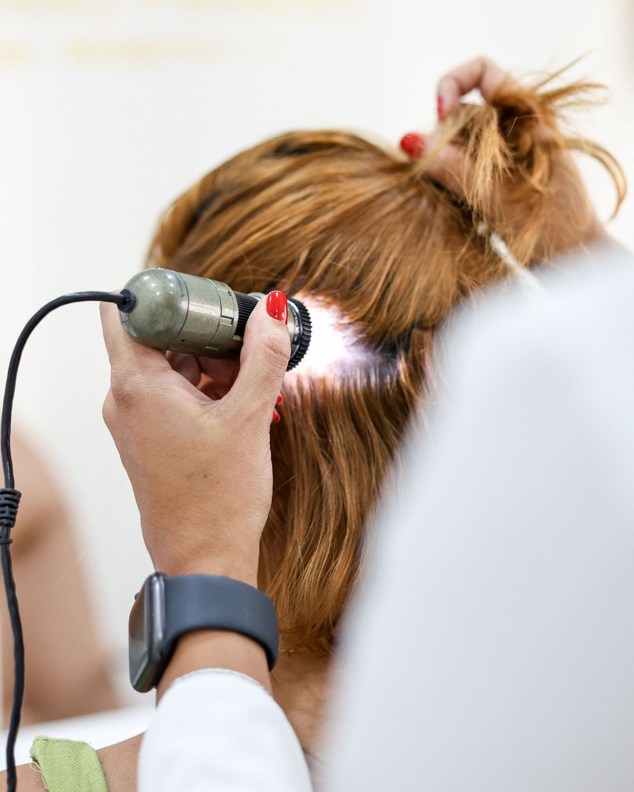

CORPO CLÍNICO HAIRZENIT

Consulta Hairzenit
Conduzida por uma tricologista da equipe, com o protocolo completo da clínica.
- Quem conduz
- Thaina Candido de Souza ou Júlia, tricologistas Hairzenit
- Avaliação
- História clínica e tricoscopia de até 200x
- Exames
- Solicitados quando a causa pede investigação
- Plano
- Em casa, no consultório ou nos dois
- Valor
- Informado no agendamento